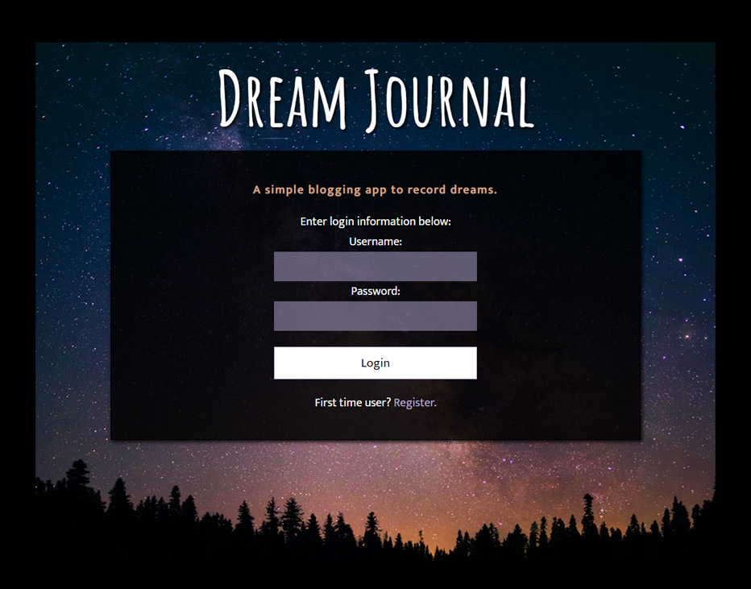

> About <
Hi, I'm Lauren.
I am a fullstack web developer based in Philadelphia, PA. I enjoy working with HTML, CSS, Javascript, jQuery, React/Redux, Node.js, Express, and Mongoose.
I previously worked as a project manager in the nonprofit & public sector. When I'm not coding, you can find me playing video games, wandering around Philly, searching for a +1 to my next concert, or travelling.
Back to top
> Portfolio <
PackTracker
PackTracker is a simple web app for tracking trip packing. Users can create, modify and save lists. React, Redux, Javascript, CSS, node.js, Express, Passport, Mocha/Chai (server unit testing), Enzyme/Jest (client unit testing), Mongoose, MongoDB


Philly Public Transportation Finder
The Philly Public Transportation Finder application allows the user to enter either a specific address or their current location (via GPS) to find the closest SEPTA public transportation options within a specified radius. HTML, CSS, Javascript, jQuery, Leaflet.js


Dream Journal
The Dream Journal application allows users to register and log a description of their dreams. Users can choose to record dates and tag specific entries. Entries can be viewed, modified and deleted from the interface. HTML, CSS, Javascript, jQuery, node.js, Express, Passport, Mocha/Chai, Mongoose, MongoDB
